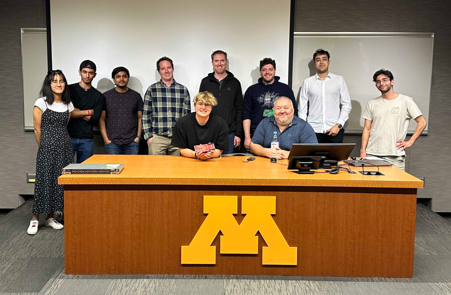
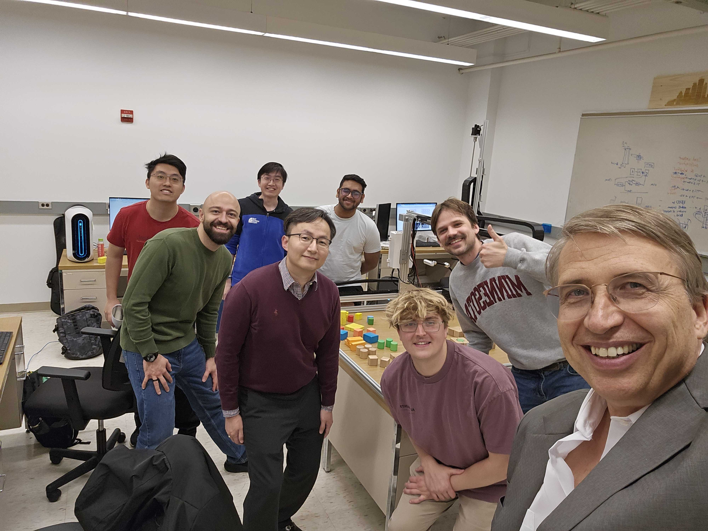
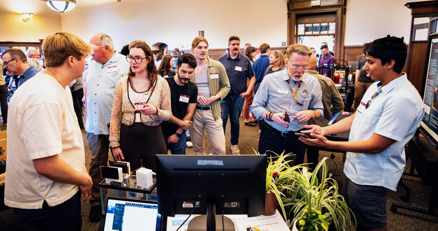
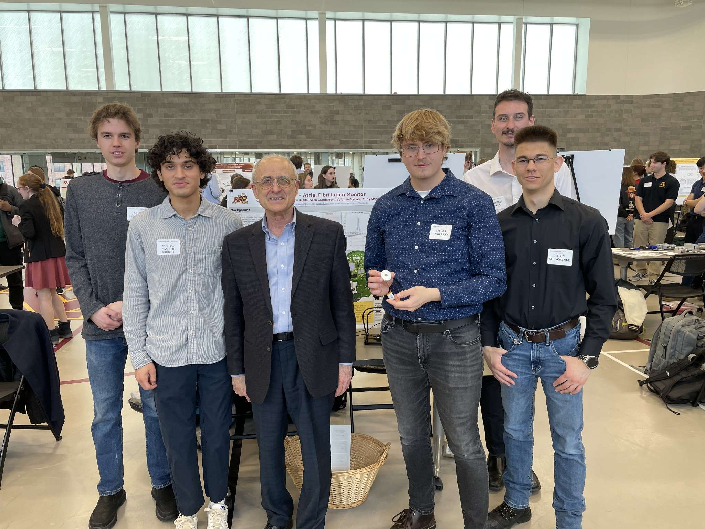
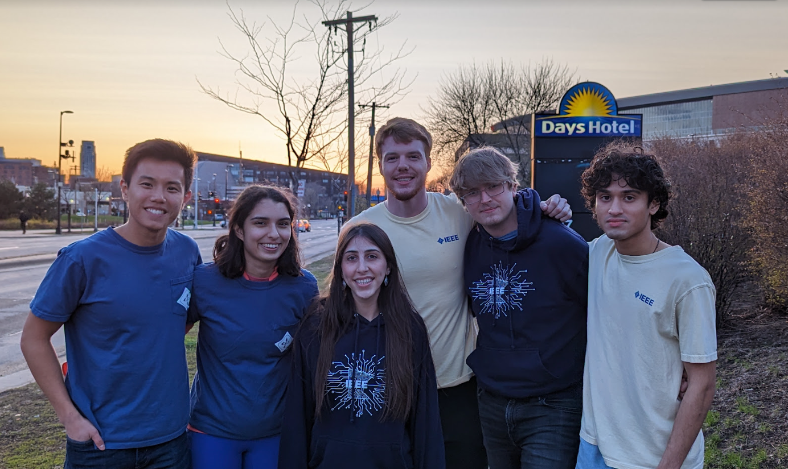
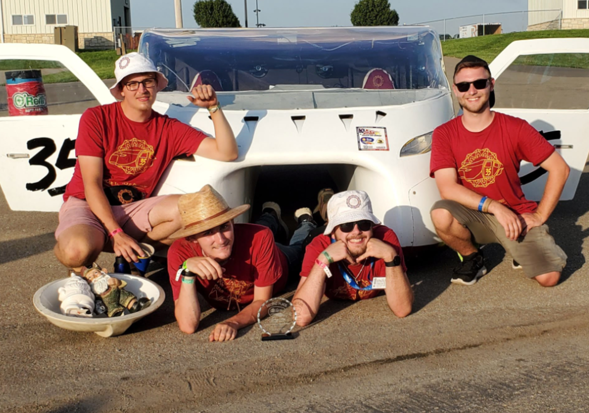

Firmware Security Engineer
Jun 2022 – Present
At HPE, I work on embedded firmware and security systems for Exascale Networking ASICs, supporting high-performance computing platforms. My focus includes hardware emulation, cryptographic protocols, continuous integration/testing (CI/CT), and code validation, collaborating with teams across Minnesota, California, and internationally. I contribute to secure boot flows, cryptographic primitives, and system verification, aiming to deliver resilient, high-efficiency solutions.

Graduate Researcher
Mar 2022 – Jul 2024
At the University of Minnesota, I worked on robotic perception and manipulation, focusing on mechanical search in high-occlusion environments. I developed AGGRO, a deep reinforcement learning platform that improved target exploration and retrieval tasks. My work extended the Grasping the Invisible (GTI) and Image-Oriented Search and Grasp (IOSG) pipelines, combining open-source hardware and state-of-the-art visual models. This research became the basis of my Master’s thesis in Electronics Engineering.

MVP Challenge Winner
Sep 2023 – Jun 2024
With Canopy Systems, I worked on a sensor fusion platform for soil and nutrient monitoring, collaborating through the MinCorps MVP Challenge. Our team refined the hardware goals, evaluated market fit, and presented the technology at entrepreneurial events, gathering valuable insights for future development.

Hardware and Product Lead
Sep 2023 – May 2024
As team lead, I oversaw the development of a wearable cardiac monitoring system, addressing biomedical design, power management, and data communication. We used tools like GitHub, Altium Designer, and Onshape to coordinate hardware and software integration, delivering a functional device for live demonstration at the end of the project.

Membership Coordinator, Chair, Treasurer
Sep 2021 – Sep 2024
During my time with IEEE, I helped rebuild chapter engagement post-pandemic, increased industry collaboration, and led local and international initiatives. As president, I focused on creating hands-on technical events; as treasurer, I provided project mentorship and funding oversight. At the global level, I worked with IEEE Catalyst to host webinars supporting student chapters worldwide.

Infotainment & Telemetry Engineer, Photography and Video Production
Sep 2021 – Jun 2022
As part of the University of Minnesota Solar Vehicle Project, I worked on firmware and hardware for two vehicle generations, focusing on the infotainment system and real-time telemetry. I designed and assembled a four-layer PCB using XBee, Bluetooth, and CAN communication, with backup systems like SD storage and supercapacitor-based UPS. I also supported team outreach through media production during FSGP and ASC competitions.
